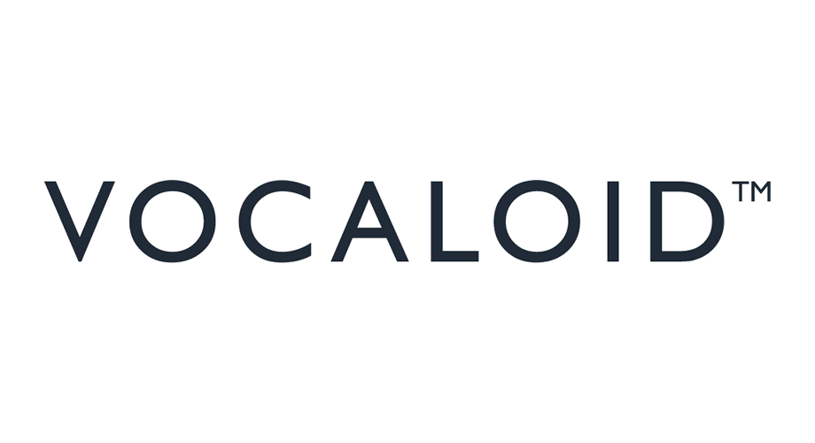
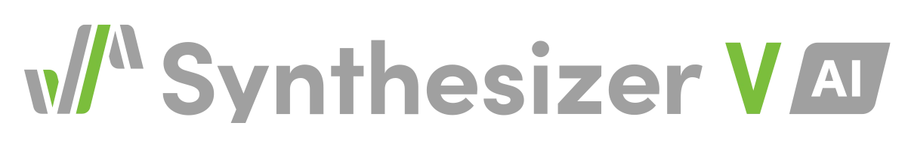
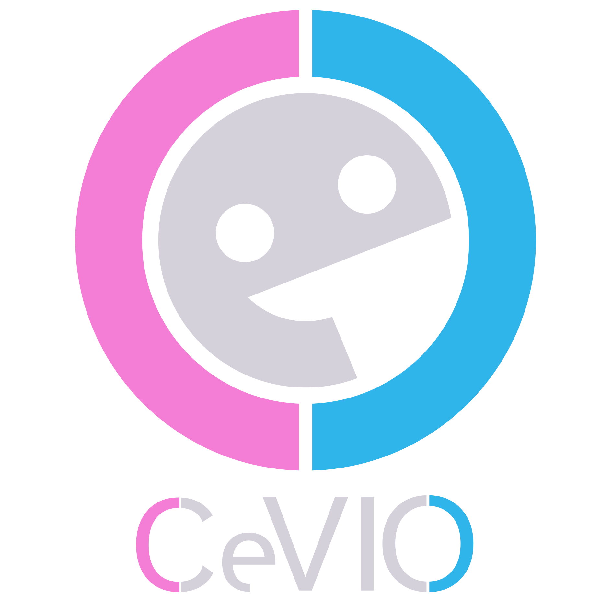
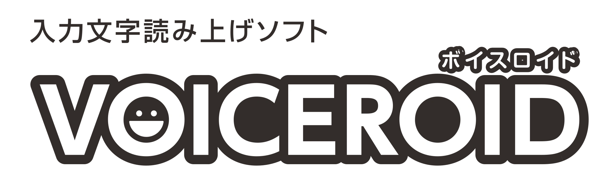

Voice Synthesizer Engines
The software platforms powering the virtual singer world

Vocaloid
The pioneering voice synth by Yamaha. Home to Hatsune Miku, Kagamine Rin/Len, KAITO & more.
By YamahaUTAU
Free, open-source singing synth loved for community voicebanks. Kasane Teto's birthplace.
Open Source · Free
Synthesizer V
Modern AI-driven vocal synth with expressive realism. Features Solaria, Teto AI & Tsurumaki Maki.
By Dreamtonics
CeVIO
Japanese vocal & talking synth known for natural expression. Popular in doujin and VN music.
By CeVIO Project
VOICEROID
Speech synthesis that doubles as a singing voice. Beloved for commentary & storytelling.
By AH-Software
NEUTRINO
Free AI singing synth using deep learning. Remarkably human-like output from score data.
AI-Based · Free